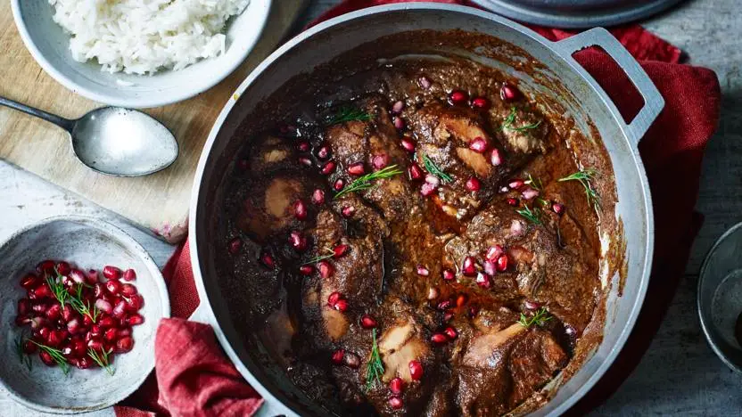

Fesenjan

Fesenjan is a rich, flavorful Persian stew made with chicken (or duck) in a tangy, slightly sweet sauce of ground walnuts and pomegranate molasses.
Its unique combination of flavors makes it a festive dish often enjoyed during special occasions.
Ingredients
-
500g chicken (or duck) pieces
-
1 large onion (chopped)
-
1 1/2 cups ground walnuts
-
1/2 cup pomegranate molasses
-
2 tbsp sugar (optional, for sweetness)
-
1 tsp turmeric
-
Salt and pepper (to taste)
-
Salt and pepper (to taste)
-
3 cups water or chicken broth
-
2 tbsp vegetable oil
Steps
-
Cook Chicken: Brown the chicken pieces in a pot with oil, turmeric, salt, and pepper.
-
Prepare Sauce: In a separate pan, sauté the chopped onion until golden, then add ground walnuts and cook for a few minutes.
-
Combine: Add the walnut mixture to the chicken, then stir in pomegranate molasses, sugar, and water/broth.
-
Simmer: Let the stew simmer on low heat for 1-2 hours, until the chicken is tender and the sauce thickens.
-
Serve: Serve hot with rice.
Homepage